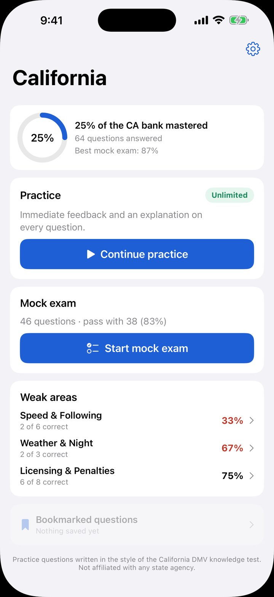
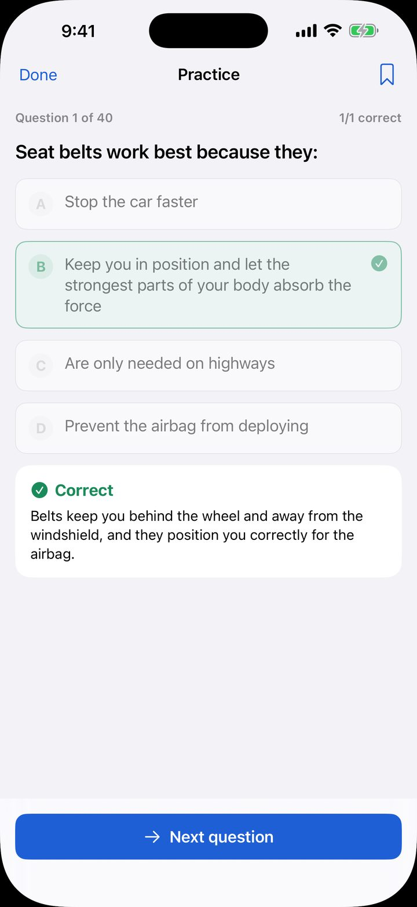
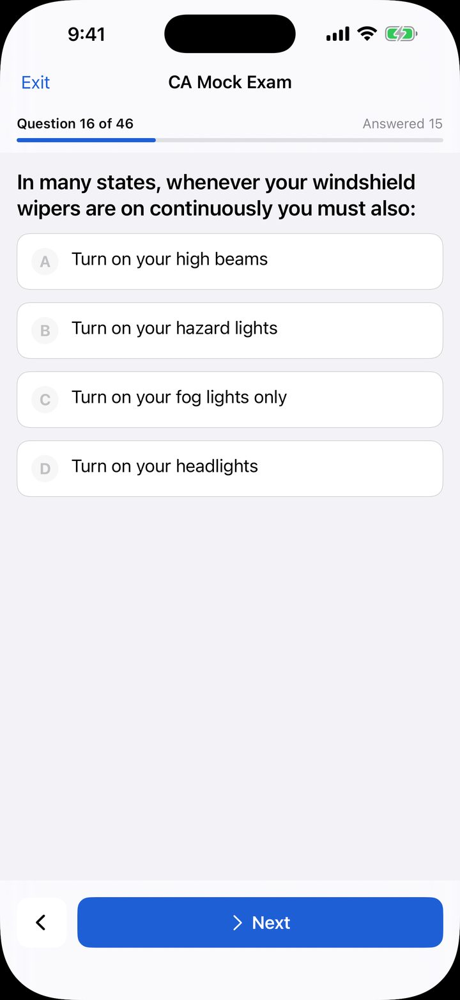
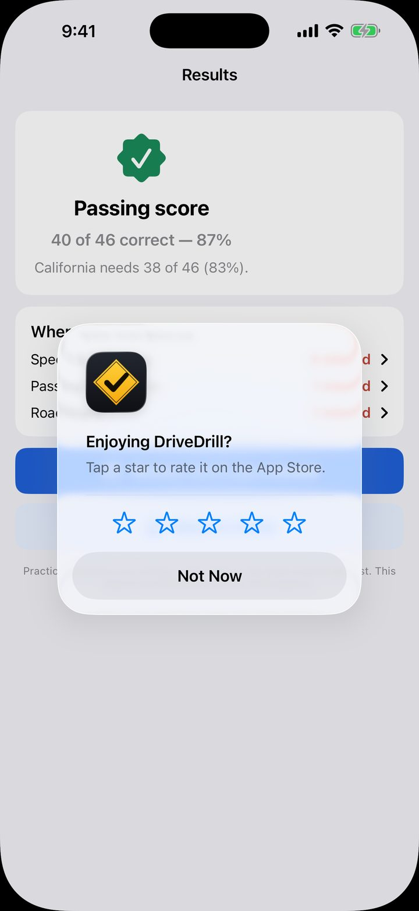

Your state's real permit test, practised.
All 50 states and the District of Columbia. 200+ questions each. Works offline.
Get DriveDrill on the App Store iPhone · iOS 17 or later · free to start




What you get
- Practice mode with instant feedback and an explanation on every question.
- Full-length mock exams matching your state's question count, pass score and section rules.
- Weak-area drills built from the questions you actually keep missing.
- Offline. No account, no sign-up, no email address.
Pricing
- Free: 15 practice questions a day and one full-length mock exam a week.
- Premium Weekly — $7.99/week, with a 3-day free trial for eligible new subscribers.
- Premium Monthly — $19.99/month.
- Pass Pack — $29.99 once. No subscription, never renews, and it unlocks every state, not just the one you are studying.
Every state, with its own exam format
These are the real formats DriveDrill builds each mock exam to. Where a state scores sections separately, the app scores them separately too.
- Alabama30 questions · pass with 24
- Alaska20 questions · pass with 16
- Arizona30 questions · pass with 24
- Arkansas25 questions · pass with 20
- California46 questions · pass with 38
- Colorado25 questions · pass with 20
- Connecticut25 questions · pass with 20
- Delaware30 questions · pass with 24
- District of Columbia30 questions · pass with 24
- Florida50 questions · pass with 40
- Georgia40 questions · pass with 30
- Hawaii30 questions · pass with 24
- Idaho40 questions · pass with 34
- Illinois35 questions · pass with 28
- Indiana50 questions · pass with 42
- Iowa35 questions · pass with 28
- Kansas25 questions · pass with 20
- Kentucky40 questions · pass with 32
- Louisiana40 questions · pass with 32
- Maine30 questions · pass with 24
- Maryland25 questions · pass with 22
- Massachusetts25 questions · pass with 18
- Michigan50 questions · pass with 40
- Minnesota40 questions · pass with 32
- Mississippi30 questions · pass with 24
- Missouri25 questions · pass with 20
- Montana33 questions · pass with 27
- Nebraska25 questions · pass with 20
- Nevada50 questions · pass with 40
- New Hampshire40 questions · pass with 32
- New Jersey50 questions · pass with 40
- New Mexico25 questions · pass with 18
- New York20 questions · pass with 14
- North Carolina25 questions · pass with 20
- North Dakota25 questions · pass with 20
- Ohio40 questions · pass with 30
- Oklahoma50 questions · pass with 40
- Oregon35 questions · pass with 28
- Pennsylvania18 questions · pass with 15
- Rhode Island25 questions · pass with 20
- South Carolina30 questions · pass with 24
- South Dakota25 questions · pass with 20
- Tennessee30 questions · pass with 24
- Texas30 questions · pass with 21
- Utah50 questions · pass with 40
- Vermont20 questions · pass with 16
- Virginia40 questions · pass with 34
- Washington40 questions · pass with 32
- West Virginia25 questions · pass with 19
- Wisconsin50 questions · pass with 40
- Wyoming25 questions · pass with 20
Where the questions come from
Every question was written for this app, paraphrasing what public state driver handbooks teach. Nothing is copied from another app's question bank. Each state-specific fact — speed limits, alcohol thresholds, phone laws, graduated licensing rules — is checked against the state's own agency, its statute, or a recognised national reference, and we keep the source on file. Where a fact could not be verified, no question is written about it.
DriveDrill is an independent study app. It is not affiliated with, endorsed by, or connected to any state motor vehicle agency. Practice questions are written in the style of state knowledge tests and are not official test questions. Your state's current official driver handbook is always the authoritative source.